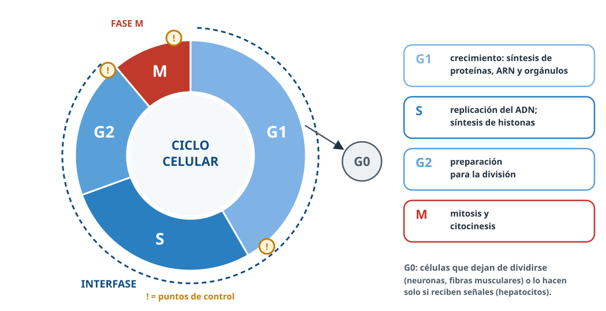

Ciclo celular y cáncer
Todo lo esencial para repasar. Resaltado = palabra clave de los criterios de corrección.
1 · Ciclo celular
- Desde que la célula se origina por división hasta que se divide en dos.
- Interfase (entre dos mitosis): G1 crecimiento y orgánulos; S replicación del ADN e histonas; G2 preparación para la mitosis.
- Fase M: mitosis + citocinesis.
- G0: no se dividen (neuronas, fibras musculares).
- Transcripción y traducción: en la interfase.

2 · ADN
- G1: 2C → S → 4C (cromosomas de 2 cromátidas, mismo número).
- Anafase: cada polo 2C. Hijas: 2C.
3 · Puntos de control
- G1/S (R): tamaño, nutrientes, señales, ADN.
- G2/M: ADN bien replicado.
- Mitosis: cromosomas unidos al huso.
- p53: detiene el ciclo o provoca apoptosis.
4 · Cáncer
- Proliferación descontrolada por mutaciones en genes que controlan el ciclo.
- Benigno / maligno: invade y da metástasis.
- Acumulación de varias mutaciones; genético pero casi nunca hereditario.
5 · Genes
- Protooncogén → oncogén: acelerador siempre pisado.
- Supresores (p53) inactivados: sin freno.
- Reparación: si fallan, más mutaciones.
6 · Cancerígenos y prevención
- Físicos: UV, rayos X, radón. Químicos: tabaco, alcohol, amianto. Biológicos: VPH, hepatitis B y C, H. pylori.
- No fumar, menos alcohol, protección solar, dieta con fruta y verdura, ejercicio, vacunas (VPH, hepatitis B) y cribados.
7 · Tratamientos
- Cirugía, radioterapia, quimioterapia, inmunoterapia.
- Taxol, vinblastina: sin huso no hay división.
- Andalucía: GENYO, IBiS, CABIMER, IBIMA; cribados públicos.
⚠️ Errores que restan
- «En S se duplican los cromosomas»: se duplica el ADN.
- «El cáncer siempre se hereda»: no.
- «Tumor = cáncer»: solo el maligno.